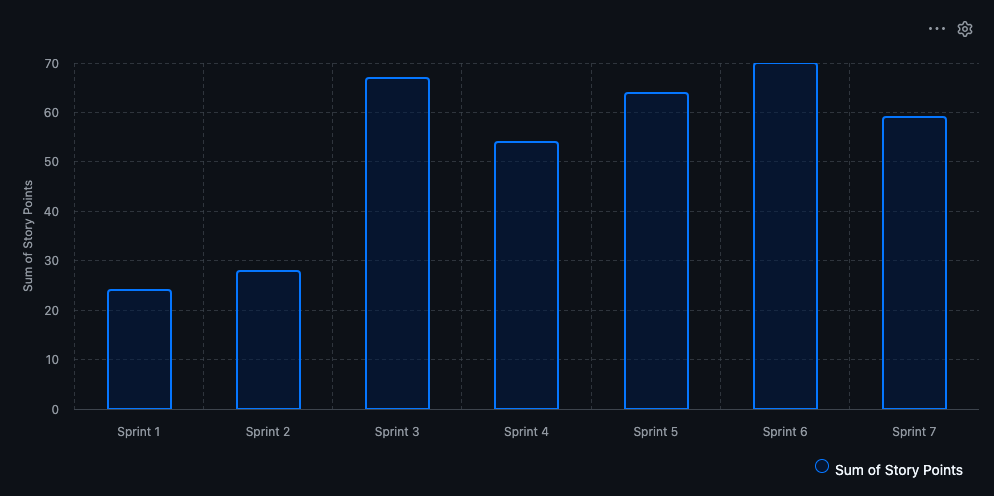
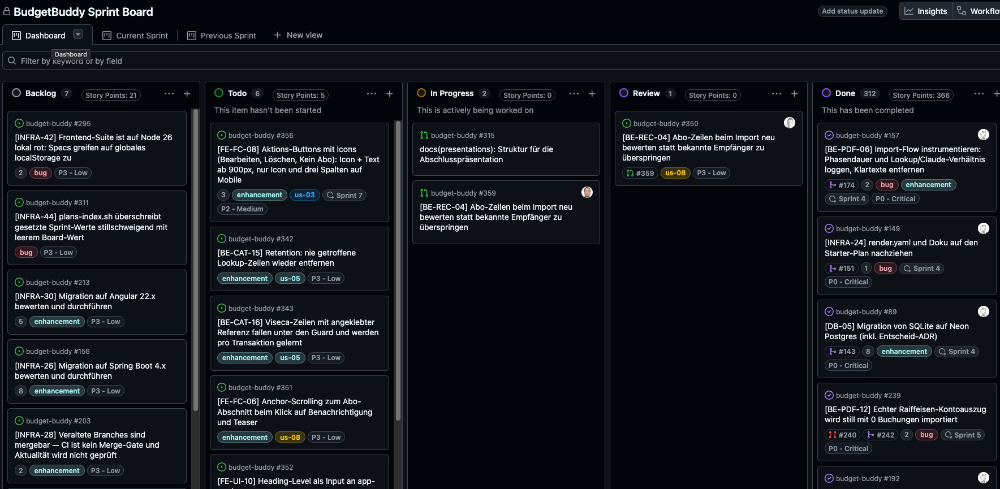
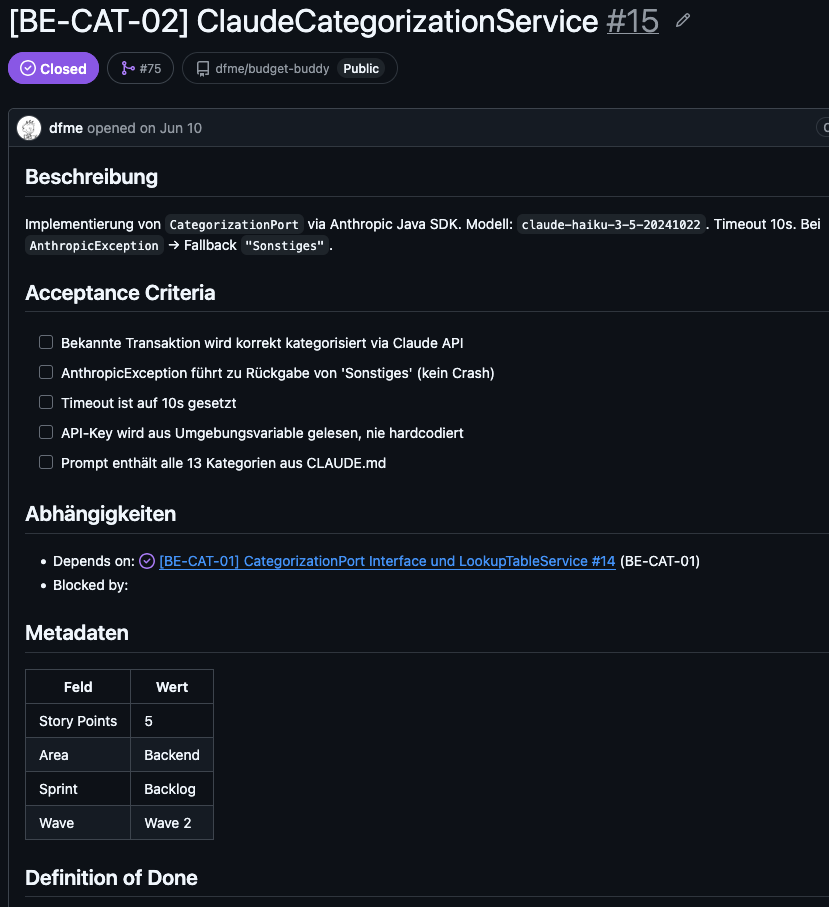

BudgetBuddy, Teil 2 — wie entschieden und gearbeitet wurde.
Teil 1 war das Was, jetzt kommt das Wie: wie wir entschieden und gearbeitet haben.
Die Methoden stammen aus dem Kurs. Spannend ist, was davon im echten Projekt überlebt hat und was wir anpassen mussten.
Leitsatz: Jede Methodik-Entscheidung hat einen dokumentierten Grund und ist im Repo nachlesbar.
Fünf Themen, je ca. 2 Min: Requirements, ADRs, Sprints und Board, Git und CI/CD, CLAUDE.md und Skills. Die meiste Zeit gehört den Skills.
Fixkosten erfassen → PDF hochladen → Kategorisieren → Safe-to-Spend
Abo-Erkennung fertig
KI-Monatsbericht offen
Sparziel
OpenBanking-Anbindung
Ausgangspunkt sind zwei Personas, Lara und Marc. Alle 14 User Stories haben Acceptance Criteria in Given/When/Then, also Sätze, an denen ein Test scheitern kann.
Must: US-03 bis US-06, die Kette vom Kontoauszug zur Zahl. Should: US-08 Abos ist umgesetzt, US-09 KI-Monatsbericht nicht (offen benennen). Could: US-07 und US-11 bewusst nicht angefangen.
Won't steht nicht in den Stories, sondern eine Ebene höher als Key Decision: kein B2B, nur Schweiz. Eine aufgeschriebene Absage muss man nicht neu diskutieren.
Kernaussage: MoSCoW zeigt seinen Wert beim Streichen. Was fällt, stand von Anfang an fest.
Kein ADR wird gelöscht — jeder wird nachgeführt, sobald das Projekt ihn widerlegt. Zwei Beispiele, zwei Arten der Nachführung:
Jede Nachführung nennt ihren Auslöser: ein Datum, eine Issue-Nummer, ein beobachtetes Verhalten. Kein ADR wird aus Prinzip geändert — sondern weil etwas passiert ist.
CLAUDE.md, Javadoc. Doku-Pflege ist Teil der Umsetzung, kein Folge-Issue.
Frage hier: Was passiert mit einem Entscheid, nachdem er gefällt ist? Fünf der 16 ADRs wurden später ergänzt oder abgelöst.
Abgelöst: SQLite (ADR-5) überlebte auf Render keinen Redeploy, ADR-12 löst es ab. ADR-5 bleibt im Repo und erklärt, warum die Wahl damals richtig war.
Ergänzt: ADR-10 (Render) bleibt gültig, der Nachtrag hält nur den Wechsel vom Free- auf den Starter-Plan fest.
Auslöser ist immer ein konkretes Projektereignis. Im Alltag zieht der Skill betroffene Doku im selben PR mit, belegt mit file:line, und beschreibt den Ist-Zustand. Die KI schreibt, der Mensch prüft im Review.
Erfahrung aus dem Projekt: Mit Claude ist das Nachführen aller Dokumente, also ADRs, Architektur, User Stories, CLAUDE.md und Javadoc, extrem viel einfacher geworden. Früher blieb Doku liegen, heute kostet sie fast nichts mehr.

Zwei-Wochen-Sprints auf einem GitHub Project Board. Velocity und Carryover werden aus dem Board abgeleitet, nicht geschätzt.
Lehre aus dem Juli: Sprint-Zuordnung stand in Milestone und Iteration-Feld und lief auseinander. Seither gibt es nur noch das Iteration-Feld, also eine Quelle pro Tatsache.
Diagramm: Sprint 1 und 2 waren Aufbau (24 und 28 Punkte), ab Sprint 3 liegt die Velocity um 60. Den Einbruch in Sprint 4 glättet der Mittelwert.

Dasselbe Board, diesmal als Bild. Die fünf Spalten entsprechen dem Git-Ablauf. Das Board hat tägliche Statusrunden ersetzt.
Zeigen: Done hat 312 Karten und 366 Punkte, die Quelle der Velocity. Issue #350 liegt in Review, PR #359 in In Progress: der Skill-Ablauf in Aktion.

FE), INFRA, DB, E2EFC, PDF, STS, AUTH, SETBE-CAT-02 heisst Backend, Kategorisierung, zweite Aufgabe. Die Nummer läuft pro Bereich, die ID sagt also, wo der Code landet.
Bugs bekommen die nächste freie Nummer im Bereich und den Branch-Präfix fix/. IDs werden nie wiederverwendet.
Die ACs sind prüfbare Haken, die DoD ist für alle Issues gleich. Dieses Issue ist alt und hat Metadaten noch im Text, heute stehen sie im Board.
feature/BE-CAT-06-…main, Review-Pflicht vor jedem MergeDie Task-ID aus dem Issue steht in Branch, Commit und PR-Titel. So lässt sich jede Codezeile auf ihr Issue zurückführen.
Pipeline: Jeder PR baut Backend und Frontend. Nur grüne PRs werden gemerged. Der Push auf main deployt auf Render.
Schritt 5: Der Smoke-Test prüft, welchen Commit die laufende Instanz wirklich ausführt. Erst das beweist, dass die Änderung live ist.
Falls Zeit: Ein CI-Job verhindert, dass gemergte Flyway-Migrationen nachträglich geändert werden.
CLAUDE.md — was die KI über dieses Projekt wissen mussEine Datei im Repo-Root, die jeder Lauf automatisch liest. Nicht generische Prompt-Hygiene, sondern das, was in diesem Projekt schon einmal schiefgegangen ist.
main„…auch nicht auf explizite Benutzeranfrage." Immer Branch und PR — und bei einer solchen Anfrage widerspricht die KI.
BigDecimalNie double/float (ADR-9) — „Rundungsfehler in der Safe-to-Spend-Berechnung sind sonst nicht ausschliessbar."
Die Einplanung läuft nur über das Iteration-Feld — „eine Kapazitätsentscheidung des Teams", nicht der KI.
Die Datei ist kein einmaliges Setup. Jede Regel steht darin, weil ein Lauf einmal etwas anderes getan hat.
CLAUDE.md wird bei jedem Claude-Lauf automatisch gelesen. Sie enthält die Eigenheiten dieses Projekts, keine allgemeinen Tipps.
Drei Beispiele: Nie auf main committen, auch nicht auf Anfrage, schützt vor der eigenen Unachtsamkeit. BigDecimal schützt den Kernwert der App. Kein Milestone und kein Sprint an Issues ist die Julilehre als Regel.
Die Datei wächst mit, fast jede Zeile hat einen Vorfall als Ursprung. Überleitung: Was die KI damit tut, zeigt die nächste Folie.
/review-pr von selbst als GitHub Action — Erst-Review ohne Zutun (INFRA-31). Entwürfe bleiben aussen vor.
Agents schreiben nie auf main und mergen nie selbst. Freigabe und Merge bleiben beim Menschen.
Drei versionierte Skills automatisieren den Zyklus, bei allen drei Entwicklern gleich.
/plan-sprint schlägt den Sprint aus Board-Daten vor. /implement-issue setzt ein Issue um, mit Plan, Tests, Security-Review und PR. /review-pr prüft den PR, führt die Tests aus und setzt blockierende Befunde als Inline-Threads.
Wichtigster Satz: Jeder Skill hält vor dem Schreiben an und fragt. Mergen tut immer ein Mensch.
Die GitHub Action ruft denselben /review-pr-Skill auf, also können lokales und automatisches Review nicht auseinanderlaufen. Er fängt Fehler ab, die Freigabe bleibt bei einer Person.
Übergabe an Sergio für die Demo.
Standbild für den Wechsel. Stehen bleiben, bis Sergio übernommen hat.